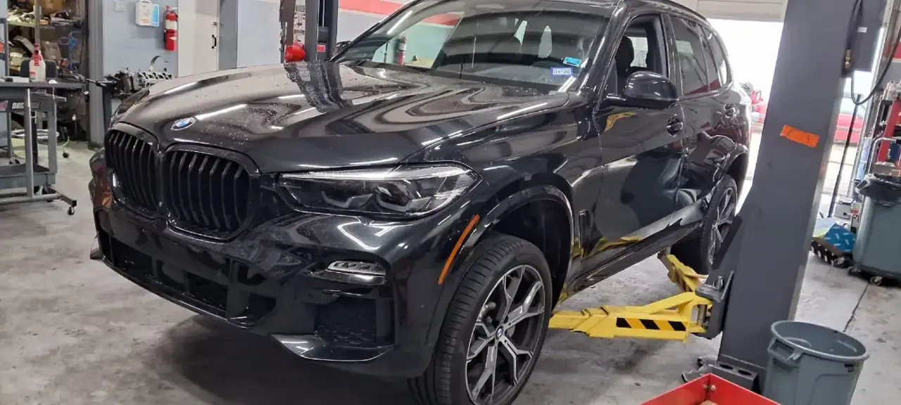
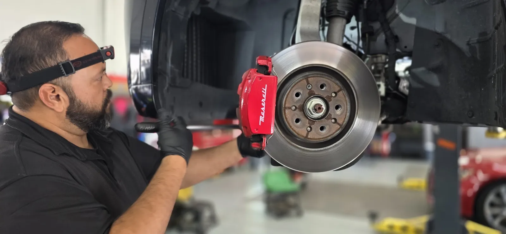
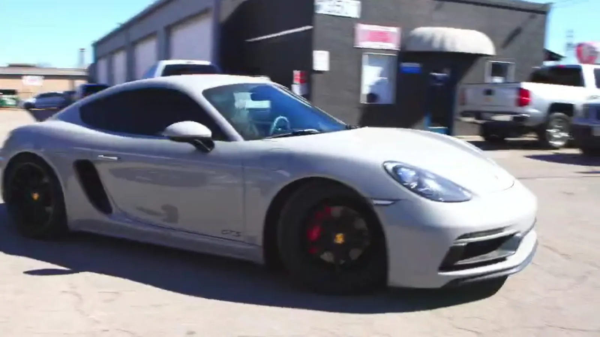

Diagnostics and engine repair
Factory-level diagnostic equipment finds the cause. Engine repair from leaks to timing chain and turbo work.
- Vehicle diagnostics
- Engine repair
- Cooling system

Services
What DR Euromaster handles for European cars in Austin.
Factory-level diagnostic equipment finds the cause. Engine repair from leaks to timing chain and turbo work.

Pads, rotors, calipers and brake fluid inspected. Alignment set to factory angles.

Maintenance that keeps it dependable. Most repairs are done in 24–48 hours.

02 / How a repair goes
Book online or call. Flexible drop-off and pick-up.
An inspection, then a clear plan before any work starts.
Most repairs done in 24–48 hours, backed by the warranty.
Good to know
German, British, Italian and Swedish: Volkswagen, Audi, Porsche, BMW, Mercedes-Benz, Jaguar, Land Rover, MINI, Fiat, Alfa Romeo, Maserati and Volvo.
Yes, complimentary loaner cars on qualifying repairs, so you stay mobile.
Most repairs are completed within 24–48 hours, and we keep you updated along the way.
Repairs and maintenance carry a 3-year/36,000-mile warranty on parts and labor.
We offer flexible drop-off and pick-up options. Contact us and we will arrange it.